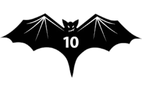
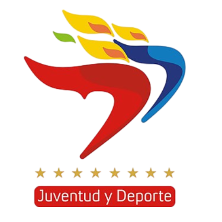

Gobierno
Bolivariano
De Venezuela
Ministerio del Poder Popular
para el Deporte


Natacion 10K
Segmento de natacion de 10km, en el lago de Valencia.
Los participantes deberán finalizar esta etapa antes del segmento de ciclismo.
Caminata 10K
Segmento de caminata de 10km, en el lago de Valencia.
Los participantes deberán finalizar esta etapa antes del segmento de natacion.
Ciclismo 30K
Segmento de ciclismo de 30km, en el lago de Valencia.
Los participantes deberán finalizar para completar el triatlon.